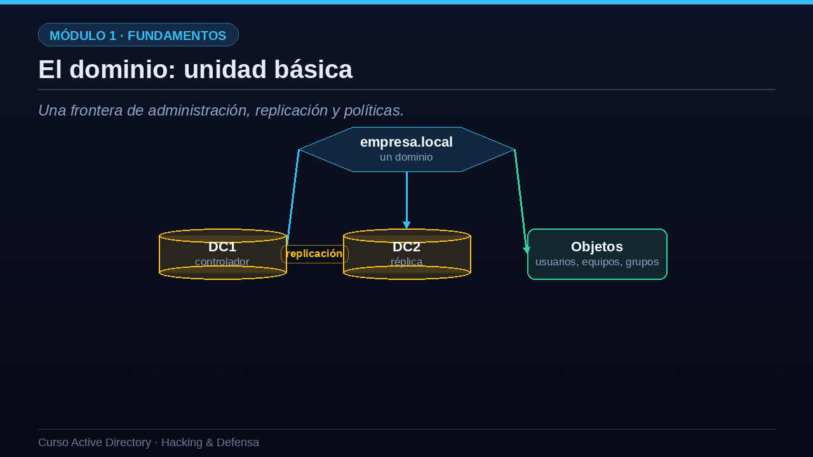
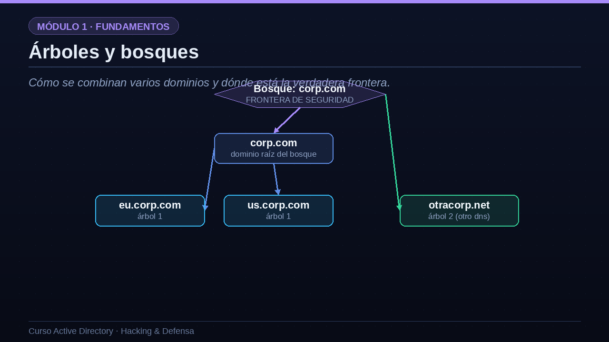
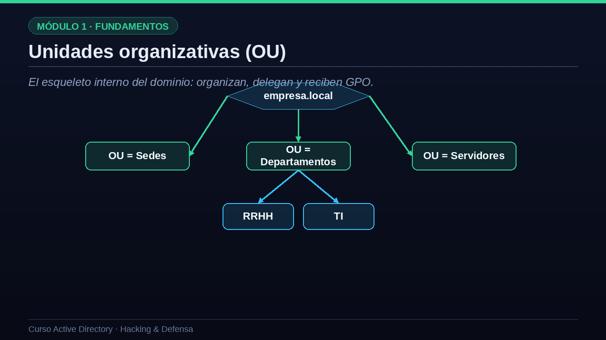

01El dominio: unidad básica
Una frontera de administración, replicación y políticas.
Empecemos por el dominio, que es la unidad básica de Active Directory. Un dominio es una frontera de tres cosas a la vez: de administración, de replicación y de políticas. Dentro de un dominio puede haber uno o varios controladores. Fíjate en que todos los controladores de un mismo dominio replican la información entre sí, de modo que todos tienen una copia actualizada de la base de datos. Por eso, si tienes dos controladores, DC uno y DC dos, y cambias la contraseña de un usuario en uno de ellos, ese cambio se replica automáticamente al otro. Todos los objetos del dominio, usuarios, equipos y grupos, viven dentro de esa frontera.

02Árboles y bosques
Cómo se combinan varios dominios y dónde está la verdadera frontera.
Cuando una empresa crece, puede necesitar varios dominios. Si esos dominios comparten un espacio de nombres continuo, por ejemplo corp punto com, con eu punto corp punto com y us punto corp punto com por debajo, forman un árbol. Si además existe otro espacio de nombres distinto, como otracorp punto net, ese sería un segundo árbol. El conjunto de todos los árboles forma el bosque. Y aquí viene la idea más importante de la lección, que repetiré a lo largo del curso: la frontera de seguridad real es el bosque, no el dominio. Dentro de un mismo bosque, todos los dominios confían automáticamente entre sí mediante relaciones de confianza transitivas. Por eso un atacante que compromete un dominio a menudo puede escalar hasta controlar el bosque entero.

03Niveles de la jerarquía
Resumamos la jerarquía de mayor a menor en una tabla. En lo más alto está el bosque, el contenedor máximo y la frontera de seguridad. Dentro hay uno o varios árboles, que son conjuntos de dominios con un DNS contiguo. Cada árbol contiene dominios, que son las unidades de administración y replicación. Dentro de cada dominio hay unidades organizativas, las OU, que sirven para organizar objetos y delegar su administración. Y en el nivel más bajo están los objetos propiamente dichos: los usuarios, los equipos y los grupos. Esta cadena, de bosque a objeto, es la columna vertebral de cualquier Active Directory.
| Nivel | Qué es | Ejemplo |
|---|---|---|
| Bosque | Contenedor máximo. Frontera de seguridad | corp.com (todo) |
| Árbol | Dominios con DNS contiguo | corp.com + eu.corp.com |
| Dominio | Unidad de administración y replicación | eu.corp.com |
| OU | Contenedor interno para organizar y delegar | OU=Ventas |
| Objeto | El elemento final: usuario, equipo, grupo | ana.lopez |
04Unidades organizativas (OU)
El esqueleto interno del dominio: organizan, delegan y reciben GPO.
Dentro de un dominio, la organización no es plana: usamos unidades organizativas para crear una jerarquía interna. Una OU es como una carpeta que agrupa objetos. Sirven para tres cosas fundamentales. Primero, para organizar: por ejemplo una OU de sedes, otra de departamentos y otra de servidores. Segundo, para delegar administración: puedes dar a un técnico permiso para gestionar únicamente los usuarios de la OU de recursos humanos, sin tocar el resto. Y tercero, y muy importante, las OU son el punto donde se enlazan las directivas de grupo, las GPO. Como ves, las OU se pueden anidar: dentro de la OU de departamentos puede haber una de recursos humanos y otra de tecnología. Diseñar bien esta estructura de OU es la base de una administración ordenada.

05Relaciones de confianza (trusts)
Los puentes que permiten que un dominio confíe en otro.
Hablemos de las relaciones de confianza, o trusts. Un trust es un puente que permite que los usuarios de un dominio accedan a recursos de otro. Dentro de un mismo bosque, estas confianzas son automáticas y transitivas: no hay que configurarlas. Entre bosques distintos, en cambio, hay que crearlas a mano, y pueden ser unidireccionales o bidireccionales. El concepto de transitividad es clave: si el dominio A confía en B, y B confía en C, ¿confía A en C de forma automática? Dentro del bosque, sí; entre bosques, depende del tipo de trust. Desde el punto de vista de la seguridad, los trusts son delicados: una relación de confianza mal diseñada puede convertir el compromiso de una filial pequeña en el compromiso de toda la organización matriz. Por eso los analizaremos con BloodHound más adelante.
- Confianza intra-bosqueAutomática y transitiva entre todos los dominios del mismo bosque.
- Confianza entre bosquesSe crea manualmente; puede ser unidireccional o bidireccional.
- Transitiva vs no transitivaSi A confía en B y B en C, ¿confía A en C? Depende del tipo.
- Riesgo de seguridadUn trust mal configurado puede propagar un compromiso entre organizaciones.
06Roles FSMO: los cinco maestros
Operaciones que no se pueden hacer en varios DC a la vez.
Aunque los controladores de dominio replican entre sí como iguales, hay cinco operaciones tan delicadas que solo las puede realizar un controlador designado en cada momento. Son los roles FSMO, los cinco maestros de operaciones. Dos de ellos son únicos en todo el bosque: el maestro de esquema y el maestro de nombres de dominio. Los otros tres existen uno por dominio: el maestro RID, que reparte identificadores; el emulador PDC; y el maestro de infraestructura. De todos, el que más nos interesa en seguridad es el emulador PDC, porque gestiona la sincronización horaria de todo el dominio, algo crítico para Kerberos, y es la referencia para los cambios de contraseña. Comprometer el controlador que tiene este rol es especialmente valioso para un atacante.
- Schema Master y Domain NamingÚnicos en todo el bosque. Controlan el esquema y los nombres de dominio.
- RID, PDC Emulator e InfrastructureUno por dominio. Reparten identificadores, hora y referencias.
- El PDC Emulator es especialGestiona la hora y es referencia para cambios de contraseña. Objetivo preciado.
07Buenas prácticas de diseño
Un diseño limpio es también un diseño más defendible.
Terminemos con algunas buenas prácticas de diseño, porque un directorio limpio es también más fácil de defender. Primera: usa el mínimo número de bosques posible, idealmente uno, porque cada bosque es una frontera de seguridad que hay que proteger. Segunda: elige un nombre de dominio interno diferente del dominio público de Internet, para evitar confusiones y fugas de información. Tercera: diseña la estructura de OU pensando en cómo vas a administrar y aplicar políticas, no copiando el organigrama de la empresa. Y cuarta, fundamental para la seguridad: mantén las cuentas privilegiadas separadas, en su propia unidad organizativa, para poder protegerlas como lo que llamaremos el Tier cero, el nivel más crítico de todos.
| Decisión | Recomendación | Motivo de seguridad |
|---|---|---|
| Nº de bosques | El mínimo posible | Cada bosque es una frontera que gestionar |
| Nombres de dominio | Nombre interno distinto al público | Evita confusiones y fugas |
| Estructura de OU | Por administración, no por organigrama | Facilita delegar y aplicar GPO |
| Cuentas privilegiadas | Separadas y en su propia OU | Permite proteger el Tier 0 |
08Resumen de la lección
Recapitulemos. El dominio es la unidad básica de administración, replicación y políticas. Los árboles y los bosques agrupan dominios, y conviene no olvidar nunca que el bosque, y no el dominio, es la verdadera frontera de seguridad. Dentro del dominio, las unidades organizativas organizan los objetos, permiten delegar la administración y son el punto donde se enlazan las GPO. Por último, las relaciones de confianza conectan dominios y los roles FSMO concentran operaciones críticas que conviene proteger. En la siguiente lección estudiaremos los protocolos que hacen funcionar todo esto por dentro: DNS, LDAP y NTLM. Nos vemos en la lección tres.
- DominioUnidad de administración, replicación y políticas.
- Árbol y bosqueAgrupan dominios; el bosque es la frontera de seguridad.
- OUOrganizan objetos, permiten delegar y reciben las GPO.
- Trusts y FSMOConfianzas entre dominios y roles especiales a proteger.